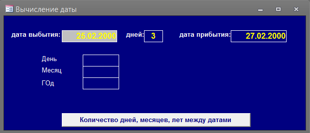

Прислал: Сергей Тереня : tnsstroi@ttknet.ru
Пример работает над ПРАВИЛЬНЫМ вычислением количества дней между датами и
какое число будет через сколько то дней. Хороша данная прога для
выписки командировочных, если выписываем командировку на два дня, к
примеру с 01.01.01 по 02.02.01 - это = два дня.


MSA-2003 ( 39 kB)